Terrain industriel
Maintenance, diagnostic et électricité industrielle.
Chargement
Élève ingénieur en génie industriel, option transformation digitale énergétique et renouvelable.
Profil hybride
Mon parcours part de l’électricité industrielle et de la maintenance, puis évolue vers la transformation digitale, l’IoT et les solutions énergétiques intelligentes et connectées. Aujourd’hui, je conçois des outils techniques mêlant terrain, données et supervision.
Maintenance, diagnostic et électricité industrielle.
ESP32, supervision et systèmes connectés.
Suivi énergétique et optimisation des usages.
Parcours
Formation de base en électricité industrielle, câblage, maintenance et sécurité électrique.
Électromécanique
Formation pratique en diagnostic, réparation et intervention en atelier.
Formation axée sur la digitalisation des procédés industriels, l’automatisation, l’IoT et les outils numériques appliqués à la production.
Maintenance électrique industrielle, diagnostic, suivi des lignes et collaboration terrain.
Option transformation digitale énergétique et renouvelable. 4e année validée, diplôme prévu en 2027.
Certifications
Formation axée sur la gestion des émotions, la communication, la prise de décision et l’adaptation aux situations professionnelles.
Engagement / Leadership
Secrétaire général adjoint de la communauté nigérienne à Rabat. Coordination, communication, organisation et représentation.
Mes réalisations
20 projets affichés
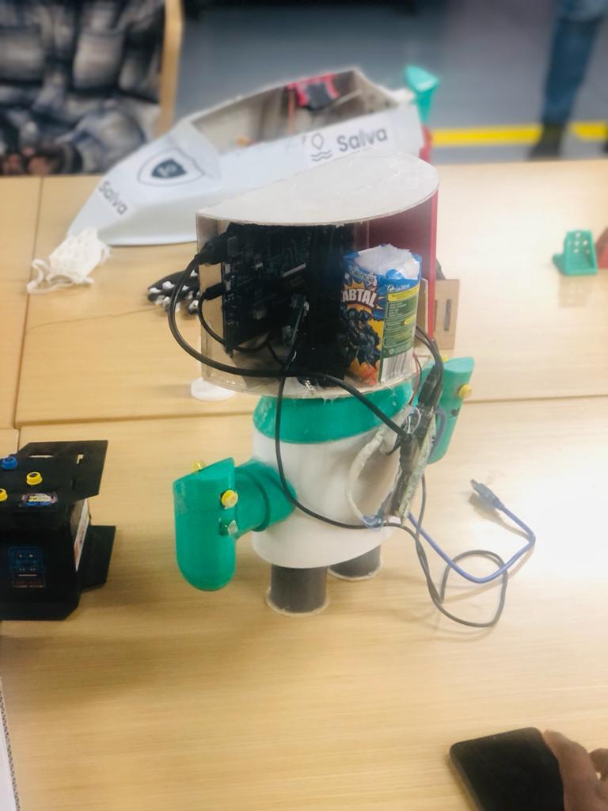
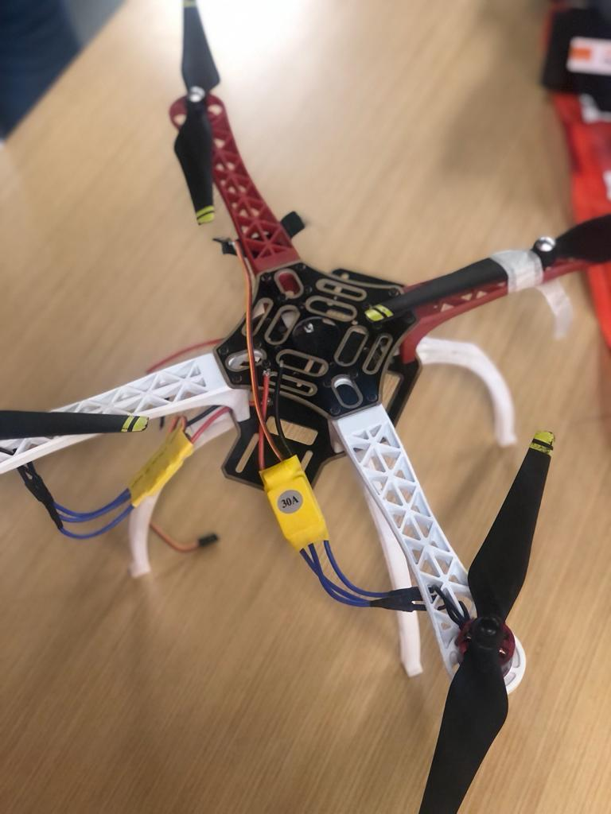
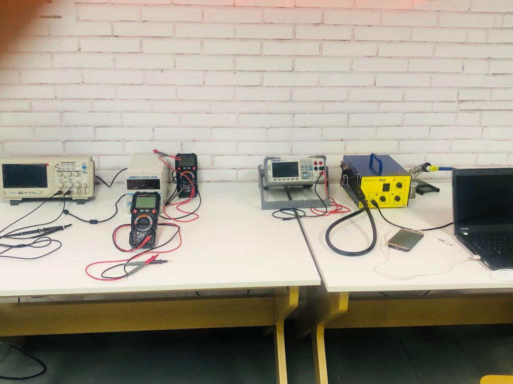
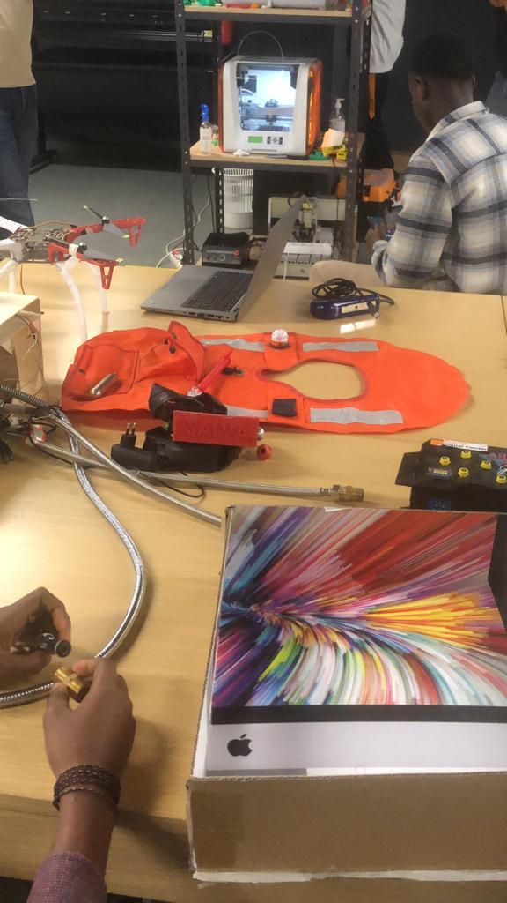
Drone - Robot - Impression 3D
Prototype autour de l'électronique embarquée, du drone, du robot et de pièces réalisées par impression 3D.
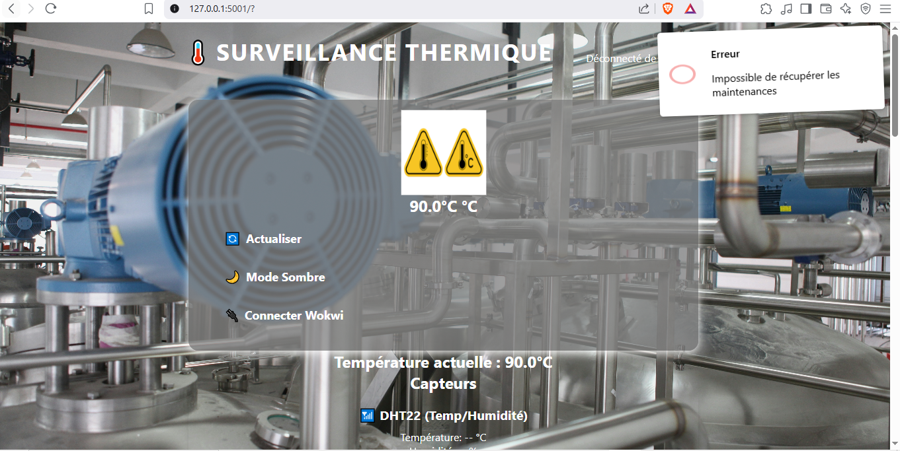
Industriesupervision-industrielle
Interface pour rendre les données terrain visibles et exploitables.
Automate programmable - Cuve
Prototype industriel avec capteur de niveau, automate programmable et moteur asynchrone pour piloter le remplissage.
Automate programmable - Signalisation
Séquence de circulation pilotée par automate programmable pour gérer les phases rouge, orange et verte.
Poste HT/BT - Niamey
Observation et maintenance d'équipements sur poste de transformation HT/BT à Niamey pendant mon stage terrain.


Électricité bâtiment
Allumage simple/double, va-et-vient, ventilation, climatiseur, armoire électrique et équipements domestiques.
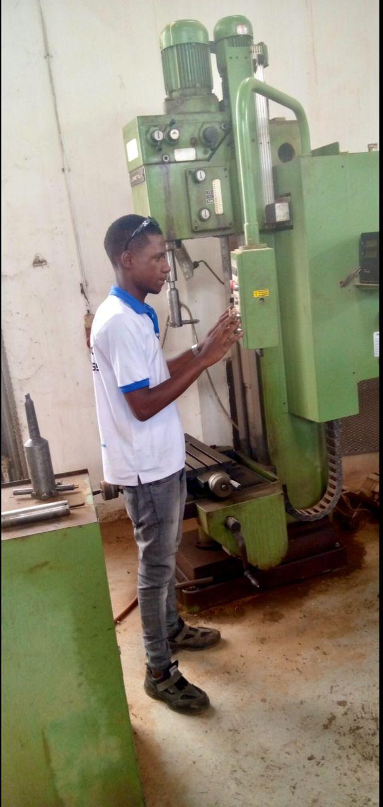
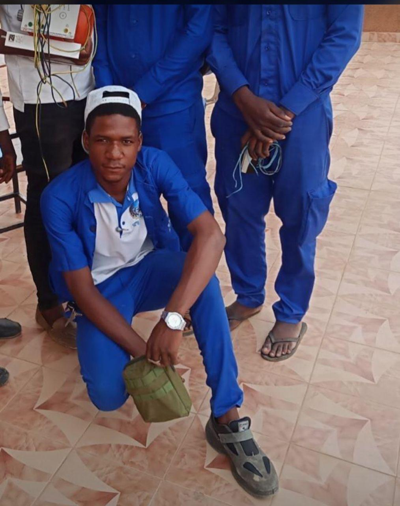
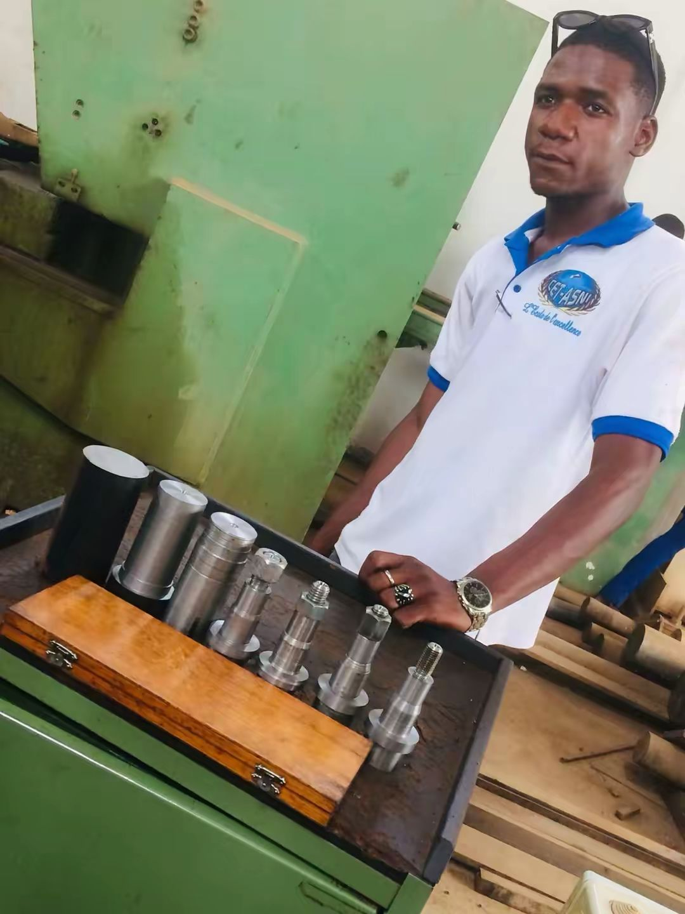
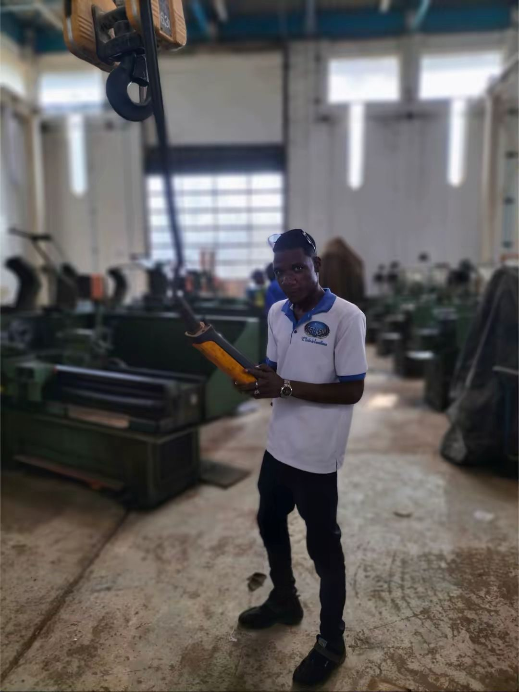
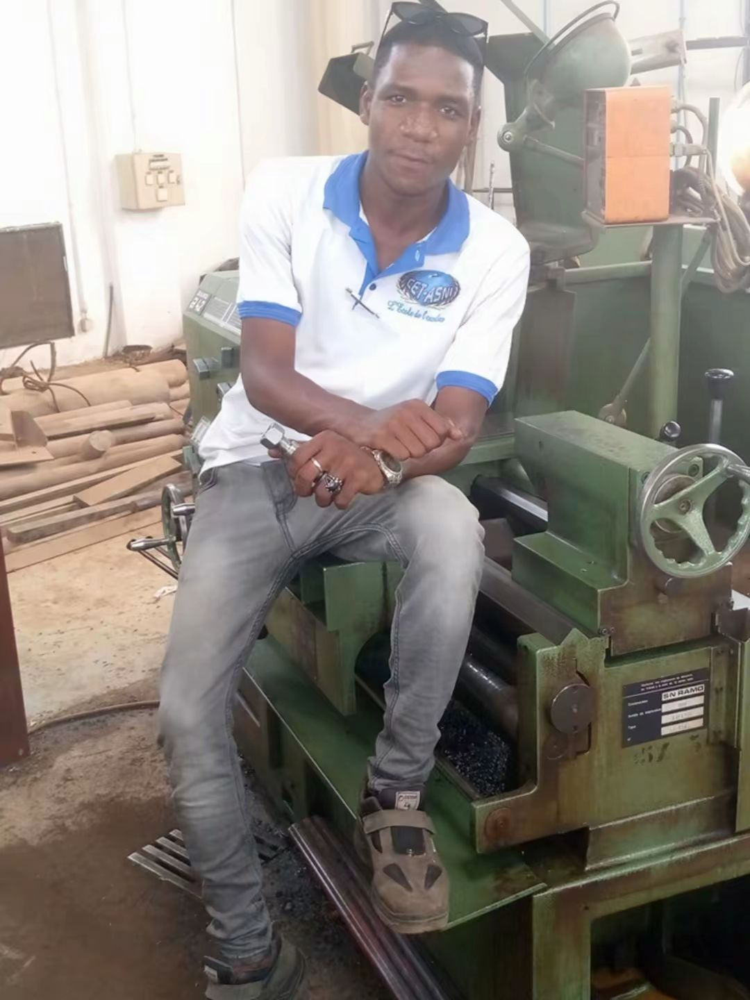
Fabrication mécanique
Maîtrise des bases d'usinage: fraisage, tournage, lecture de pièces et travail en atelier.
moctar-jarvis-assistant
Assistant numérique pour automatiser les demandes et centraliser les interactions utiles.
 IoT
IoT
iot-energy-esp32-monitoring
Prototype IoT reliant mesures énergétiques et suivi embarqué.
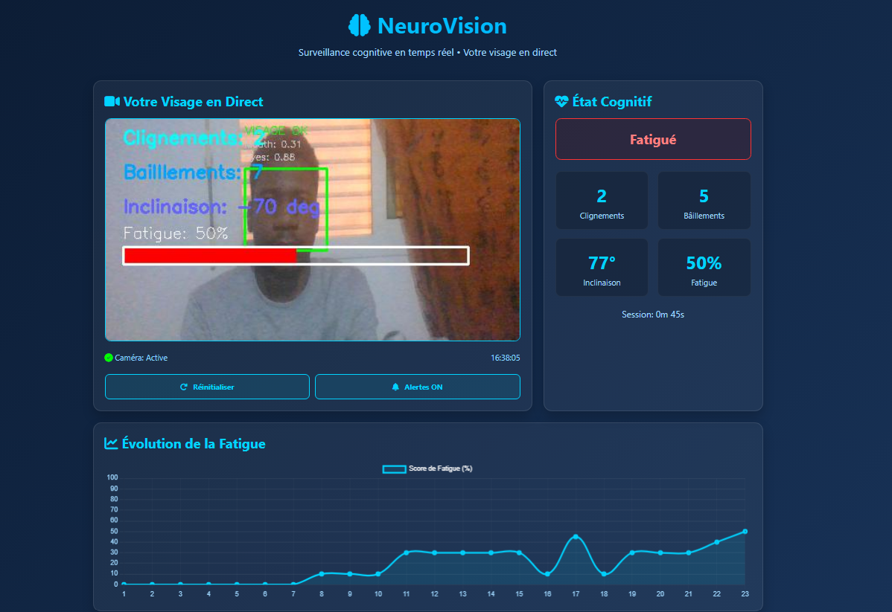
IAneurovision
Analyse visuelle et interfaces intelligentes pour exploiter des données image.
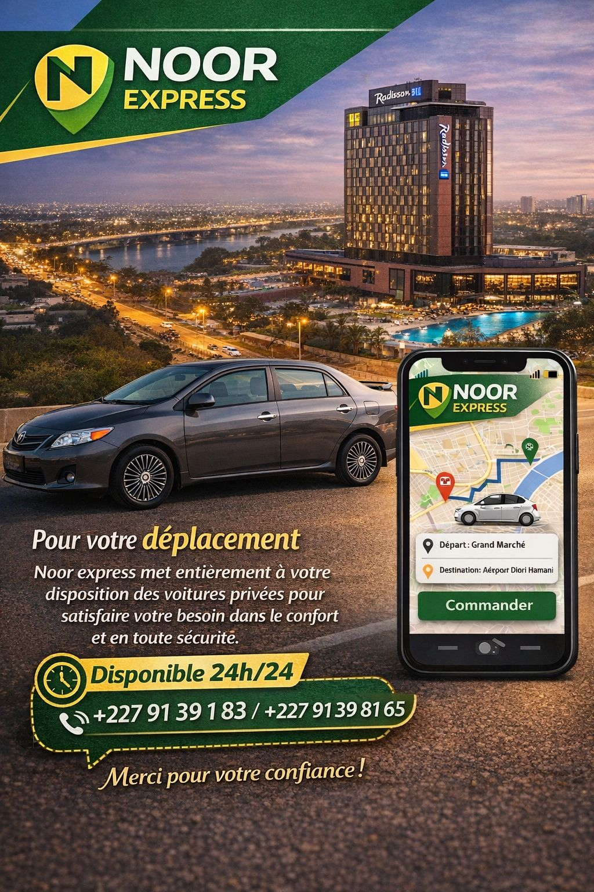
WebNOOR EXPRESS
Solution type Uber ou InDrive pour réserver une course, connecter passagers et chauffeurs, et suivre les trajets à Niamey.
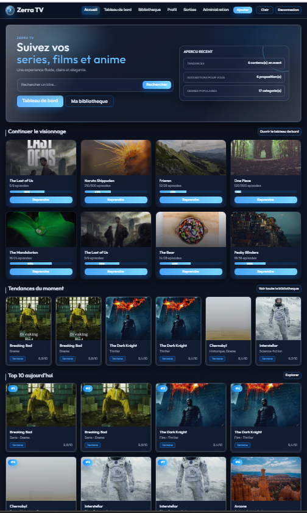
WebSuiviSeriesTV
Organise les séries, suit l'avancement et retrouve les contenus rapidement.
labeeb
Application éducative inspirée de Duolingo pour apprendre l'arabe avec des exercices interactifs.
mutiecole
Solution pour centraliser les données scolaires: absences, professeurs, élèves, notes et parents.
baba-marketplace
Vente en ligne avec logique marketplace, catalogue et parcours utilisateur.
baba-marketplace-livraison
Module dédié aux livraisons et au suivi des commandes marketplace.
monitoring-energy
Suivi des données d'énergie, visualisation des mesures et analyse de consommation.
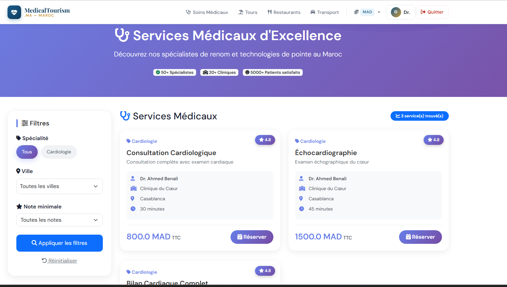
Webmedical_tourism_app
Application web pour le parcours patient, les services médicaux et les demandes.
delnova-imo-complet
Projet immobilier pour présenter, organiser et gérer annonces ou services.
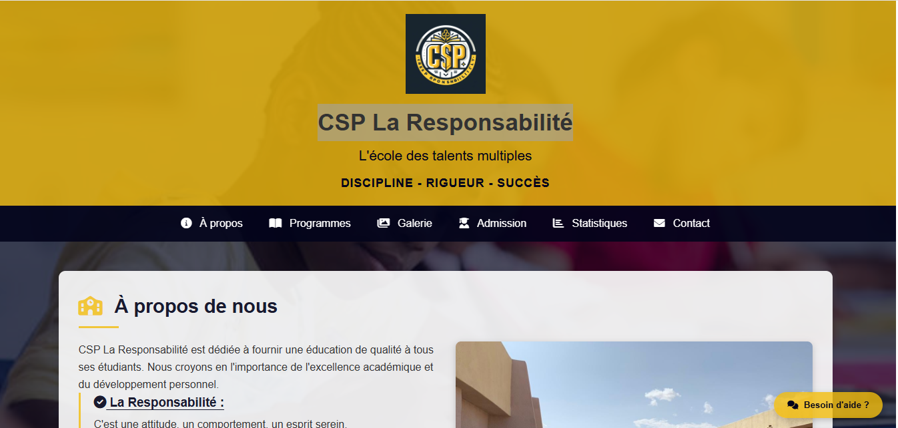
Webcsp-la-responsabilite
Site d'école privée à Niamey pour présenter l'établissement et les infos essentielles.
Compétences
Prototypage connecté, capteurs et acquisition de données.
Logique industrielle, maintenance et suivi de production.
Systèmes électriques, solaire et énergie industrielle.
Interfaces, APIs et dashboards pour systèmes connectés.
Analyse et exploitation des données techniques.
Conception, modélisation et analyse technique.
Atelier, maintenance mécanique et machines-outils industrielles.
Bureautique, gestion d'entreprise et outils ERP.
Contact
Disponible pour projets IoT, énergie et systèmes connectés.